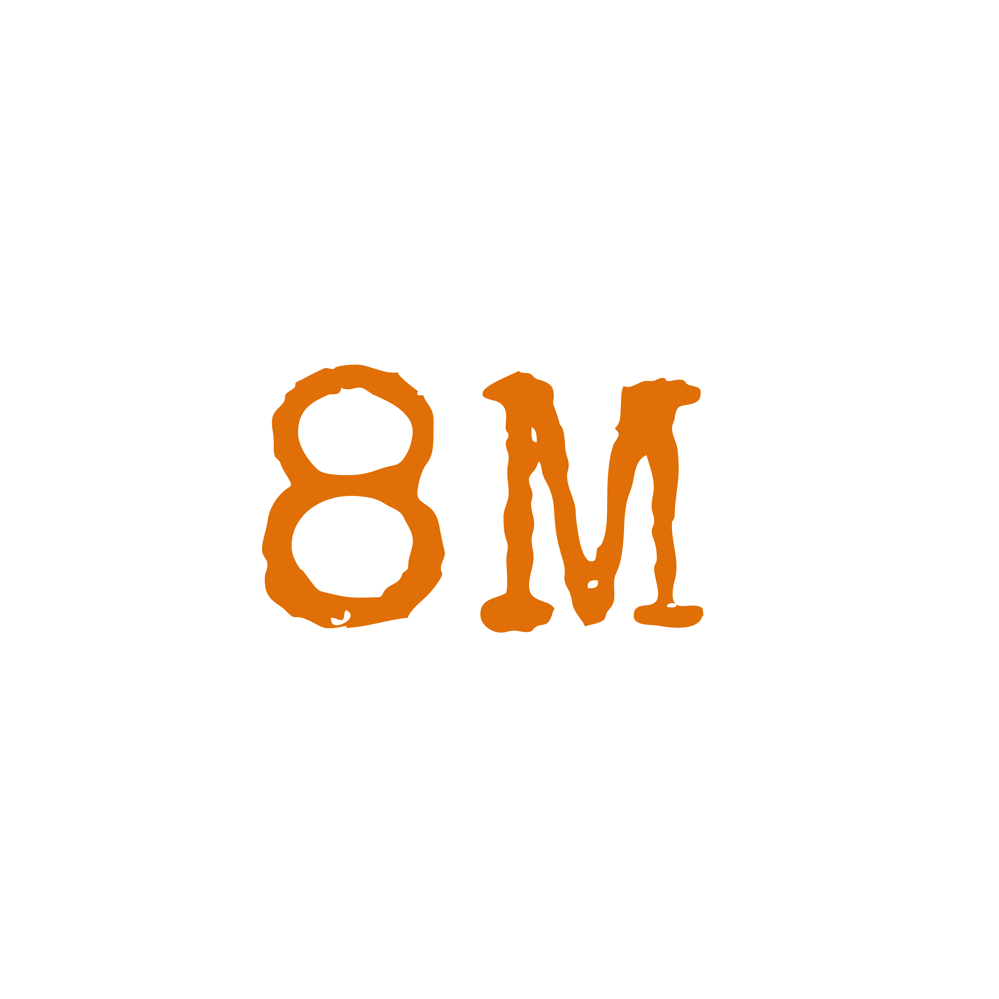
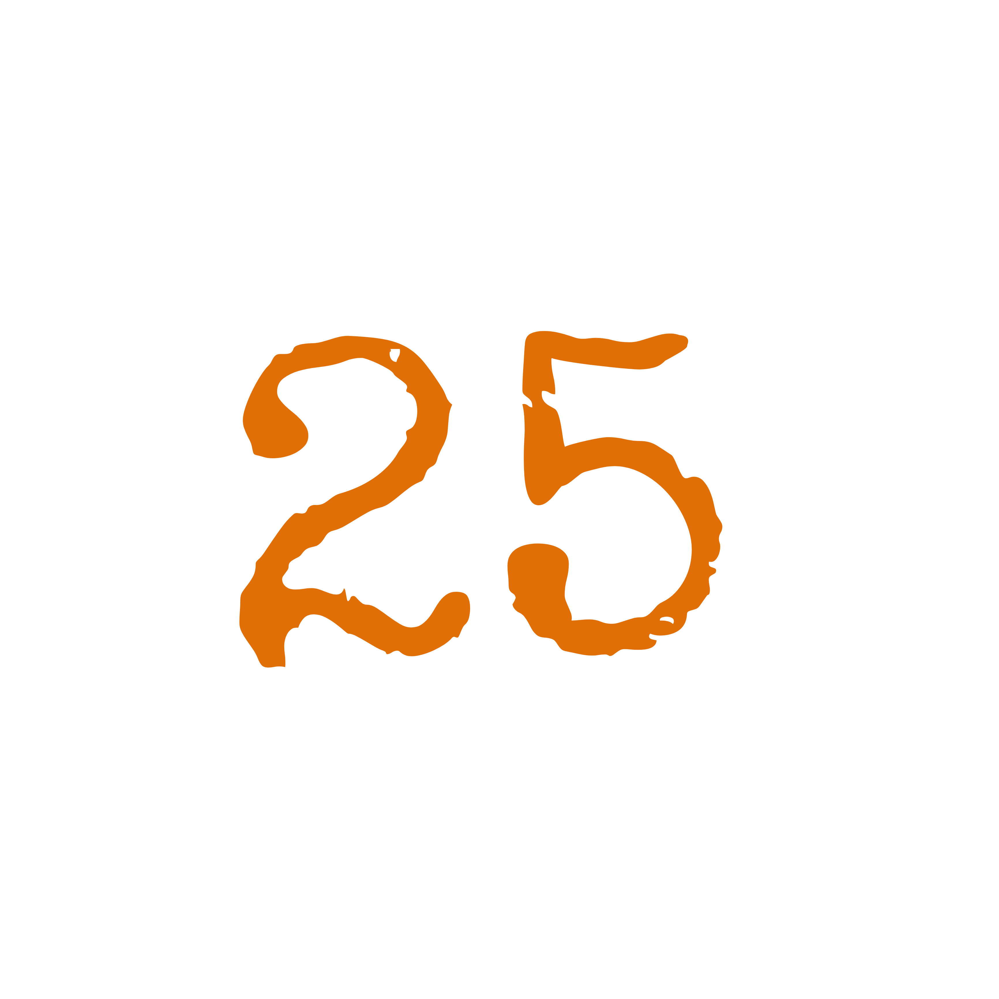
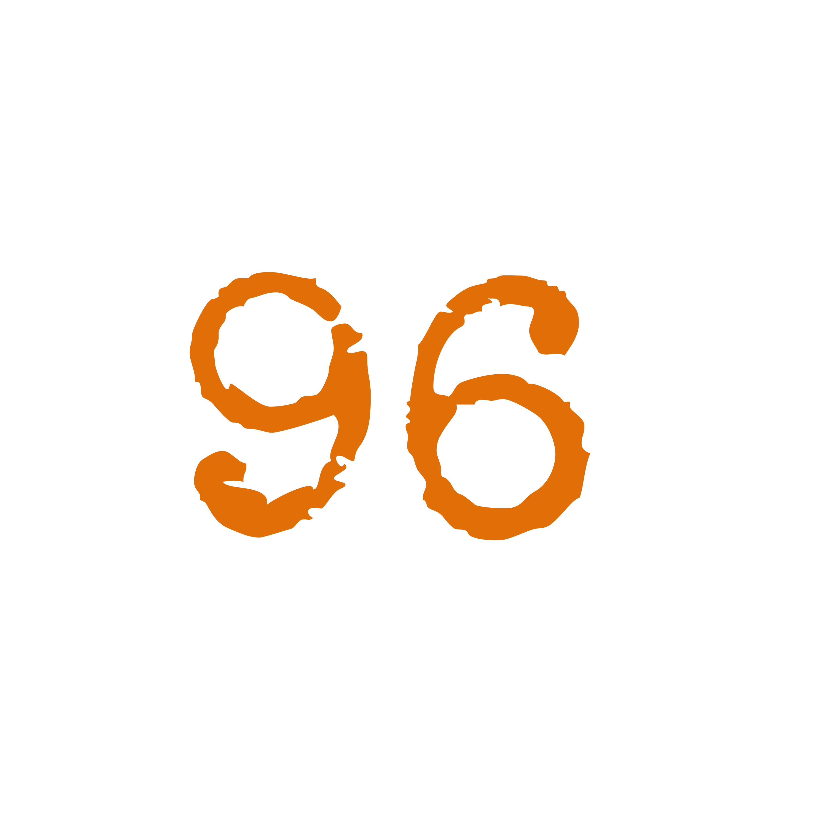
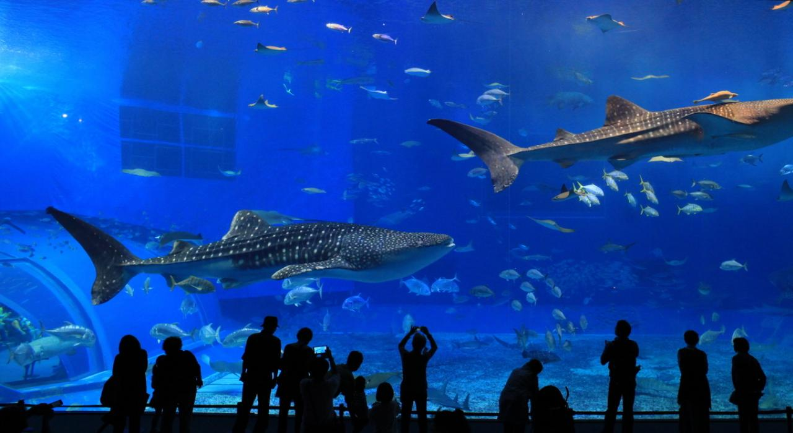

Como la organización de conservación líder en el mundo, Naturalia trabaja en casi 100 países para abordar los problemas más apremiantes en la intersección de la naturaleza, las personas y el clima. Colaboramos con las comunidades locales para conservar los recursos naturales de los que todos dependemos y construir un futuro en el que prosperen las personas y la naturaleza. Junto con socios en todos los niveles, transformamos los mercados y las políticas hacia la sostenibilidad, abordamos las amenazas que provocan la crisis climática y protegemos y restauramos la vida silvestre y sus hábitats.
 DE LISTAS ILEGALES DE TRAFICO DE VIDA SILVESTRE ELIMINADOS
 AÑOS AYUDANDO AL PLANETA TIERRA
 PAISES ALCANZADOS
Naturalia y sus miembros están comprometidos a inspirar e involucrar a los más de 700 millones de personas que visitan zoológicos y acuarios cada año, literalmente una décima parte de la población mundial, para tomar medidas para la conservación de las especies y la naturaleza. 